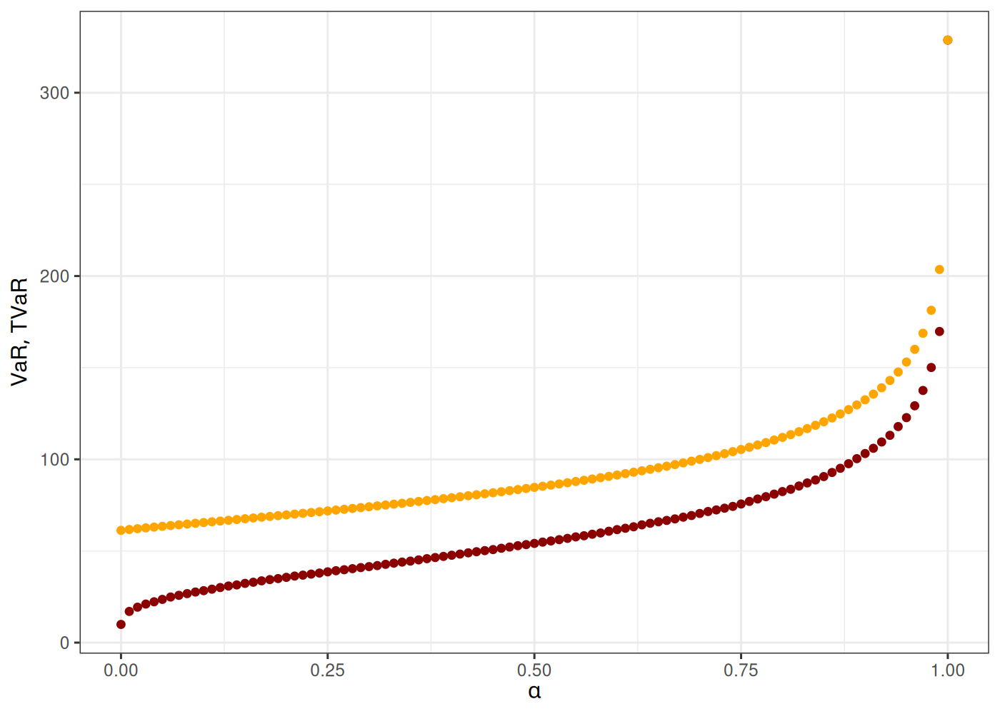

Capítulo 7 Tarificación
Una vez estimado los reclamos totales se trata de establecer una forma optima para estimar el valor que deberá pagar el asegurado, la prima, para que la compañia de seguros se haga cargo de riesgo. En esto debe incluirse algunas consideraciones adicionales, además de la estimación de la frecuencia y severidad de los reclamos, es también relevante tener en consideración otros valores asociados a diferentes costo, el retorno esperado por el inversionista y finalmente el rendimiento de inversiones. Todo lo anterior debe ser conjugado para obtener una adecuada estimación de la prima.
Adicionalmente, se debe tener en cuenta que el riesgo cubierto está sujeto a variaciones propias de la aleatoriedad del fenómeno y que puede presentar variaciones significativas respecto de la media, es decir, que la volatilidad del riesgo cubierto puede influenciar significativamente el pago total de los reclamos. Ante ello surge un concepto de vital importancia, el cual lo desarrollamos a continuación y se lo conoce como medidas de riesgo.
7.1 Medidas de riesgo
Definición 7.1 (Medida de riesgo coherente) Una medida de riesgo coeherente es una función \(\rho: \mathbb{R}\longrightarrow \mathbb{R}\), que satisface la siguientes propiedades:
Normalización, el riesgo de nada es nada \[ \rho( 0 ) = 0 \]
Homogenidad positiva, el riesgo crece con la escala, así para cualquier \(a > 0\) \[ \rho( a X ) = a \rho( X ) \]
Invarianza ante las traslaciones, para cualquier \(a > 0\) \[ \rho( \alpha X + a ) = \rho( \alpha X ) + a \]
Monotonicidad, Si \(X \leq Y\) \[ \rho( X ) \leq \rho( Y ) \]
Sub-aditividad, el diversificar el riesgo es menor a la suma de los riesgos independientes \[ \rho( X + Y ) \leq \rho( X ) + \rho( Y ) \]
En lo que continúa citamos algunas de las medidas de riesgo usualmente utilizadas.
Definición 7.2 (Valor en riesgo) Dada una variable aleatoria a valores reales \(X\), el valor en riesgo (value at risk) de \(X\) al nivel de probabilidad \(\alpha \in (0,1)\) está dado por \[ \operatorname{VaR}_{\alpha}( X ) = \inf\left\{ x \in \mathbb{R}\middle| F_X( x ) > \alpha \right\} \]
Proposición 7.1 Si la función de distribución acumulada \(F_X\) es continua, entonces \(\operatorname{VaR}_{\alpha}( X ) = F_X^{-1}( \alpha )\).
Por otra parte, \(\operatorname{VaR}_{\alpha}\) para cualquier \(\alpha\) no es una medida de riesgo sub-aditiva.
El método directo para el calcular el \(\operatorname{VaR}_\alpha\) es directamente atacando el problema de encontrar el ínfimo, esto es un problema de optimización que puede tener sus complicaciones, ya que muchas de las veces la distribución acumulada \(F\) no es conocida o fácilmente computable. Incluso en el caso cuando la función de distribución \(F\) es continua, resta el problema de poder invertir esta función.
Otra forma es acudir a los métodos de simulación estocástica, partiendo de una muestra \(X_1, \ldots, X_n\) y calculando de forma aproximada \[ \operatorname{VaR}_{\alpha}( X ) \approx F_n^{-1}( \alpha ) \] En principio no sabemos si esta aproximación será consistente conforme se aumenta el tamaño de la muestra, sin embargo para ello tenemos la siguiente proposición, la cual nos da una certeza al respecto.
Proposición 7.2 Si consideramos una familia de variables aleatorias \(\{X_n\}_{n\in \mathbb{N}}\) i.i.d con distribución común \(F\) no necesariamente continua, entonces el percentil empírico de orden \(\alpha\), \(\xi_{n,\alpha} = F_n^{-1}( \alpha )\), que se puede extraer a partir de las \(n\) primeras variables en la muestra converge en probabilidad al valor \(\xi_{\alpha} = \operatorname{VaR}_{\alpha}( X )\), correspondiente al valor en riesgo.
Demostración. Utilizando la versión unilateral de la desigualdad 4.6, podemos establecer las siguientes acotaciones \[ \begin{split} P\left( \xi_{n,\alpha}- \xi_{\alpha} > \varepsilon \right) & = P\left( \xi_{n,\alpha} > \xi_{\alpha} + \varepsilon \right) \\ & = P\left( F_n( \xi_{n,\alpha} ) > F_n( \xi_{\alpha} + \varepsilon ) \right) \\ & = P\left( F( \xi_{\alpha} + \varepsilon ) + \alpha > F( \xi_{\alpha} + \varepsilon ) + F_n( \xi_{\alpha} + \varepsilon ) \right) \\ & = P\left( F( \xi_{\alpha} + \varepsilon ) - F_n( \xi_{\alpha} + \varepsilon ) > F( \xi_{\alpha} + \varepsilon ) - \alpha \right) \\ & \leq P\left( \underset{x \in \mathbb{R}}{\sup} \left( F - F_n \right) > F( \xi_{\alpha} + \varepsilon ) - \alpha \right) \\ & \leq Ce^{-2n \left( F( \xi_{\alpha} + \varepsilon ) - \alpha \right) ^2 } \end{split} \]
\[ \begin{split} P\left( \xi_{n,\alpha} - \xi_{\alpha} < -\varepsilon \right) & = P\left( \xi_{n,\alpha} < \xi_{\alpha} - \varepsilon \right) \\ & = P\left( F_n( \xi_{n,\alpha} ) < F_n( \xi_{\alpha} - \varepsilon ) \right) \\ & = P\left( F( \xi_{\alpha} - \varepsilon ) + \alpha < F( \xi_{\alpha} - \varepsilon ) + F_n( \xi_{\alpha} - \varepsilon ) \right) \\ & = P\left( F_n( \xi_{\alpha} - \varepsilon ) - F( \xi_{\alpha} - \varepsilon ) > \alpha - F( \xi_{\alpha} - \varepsilon ) \right) \\ & \leq P\left( \underset{x \in \mathbb{R}}{\sup} \left( F - F_n \right) > \alpha - F( \xi_{\alpha} - \varepsilon ) \right) \\ & \leq Ce^{-2n \left( \alpha - F( \xi_{\alpha} - \varepsilon ) \right) ^2 } \end{split} \] Uniendo ambos resultados concluimos \[ P\left( \left| \xi_{n,\alpha}- \xi_{\alpha} \right| > \varepsilon \right) \leq 2 C e^{-2n \min\left( F( \xi_{\alpha} + \varepsilon ) - \alpha, \alpha - F( \xi_{\alpha} - \varepsilon ) \right)^2 } \] Podemos concluir con toda confianza que el percentil \(\xi_{n,\alpha}\) que se obtiene de la distribución empírica se aproxima en probabilidad al percentil \(\xi_{\alpha} = \operatorname{VaR}_{\alpha}( X )\)
Algoritmo de simulación
Con lo anterior se puede crear un algoritmo de simulación estocástico que precisamente contemple el respectivo nivel de convergencia, de ahí que la demostración de la proposición anterior no es inútil, ya que de la misma resulta un criterio para determinar el número de simulaciones que se desea calcular.
Fijamos un valor \(\delta > 0\) el cual acota la probabilidad del evento que mide el error de aproximación, i.e. \(P\left( \left| \xi_{n,\alpha} - \xi_{\alpha} \right| > \varepsilon \right) \leq \delta\) y tomando en cuenta la desigualdad en 7.2. \[ \begin{split} 2 C e^{-2n \min\left( F( \xi_{\alpha} + \varepsilon ) - \alpha, \alpha - F( \xi_{\alpha} - \varepsilon ) \right)^2 } & \leq \delta \\ -2n \min\left( F( \xi_{\alpha} + \varepsilon ) - \alpha, \alpha - F( \xi_{\alpha} - \varepsilon ) \right)^2 & \leq \log( \delta )-\log(2) - \log( C ) \\ n & \geq -\frac{\log( \delta )-\log(2)-\log( C )}{2 \min\left( F( \xi_{\alpha} + \varepsilon ) - \alpha, \alpha - F( \xi_{\alpha} - \varepsilon ) \right)^2} \end{split} \] Como se evidencia \(n\) crece en orden cuadrático proporcional a la aproximación dada por \(\min\left( F( \xi_{\alpha} + \varepsilon ) - \alpha, \alpha - F( \xi_{\alpha} - \varepsilon ) \right)\) alrededor del percentile \(\alpha\). Lo cual no es un resultado muy alentador.
Si se establece un valor \(\widetilde{\varepsilon} > 0\) para el término \(\widetilde{\varepsilon} \leq \min\left( F( \xi_{\alpha} + \varepsilon ) - \alpha, \alpha - F( \xi_{\alpha} - \varepsilon ) \right)\), la expresión anterior se modifica a la siguiente \[ n \geq -\frac{\log( \delta )-\log(2)-\log(C)}{2 \widetilde{\varepsilon}^2} \] Claramente la cantidad de simulaciones que se debe realizar para lograr una aproximación de orden \(\varepsilon\), se requiere un orden de simulaciones cuadrático inverso a este valor. El ejemplo numérico a continuación es aleccionador al respecto de la dificultad numérica de aproximar un cálculo de \(VaR_\alpha\).
Entonces los pasos del pseudo-algoritmo de simulación estarán dados por:
Fijar el nivel de confianza al que se desea calcular \(0 < \alpha < 1\)
Fijar el nivel probabilidad para los errores de aproximación \(\delta > 0\)
Fijar el nivel erro \(\widetilde{\varepsilon} > 0\)
Estimar el posible error de estimación \(\varepsilon > 0\)
Buscar el número de simulaciones adecuadas \(n \in \mathbb{N}\) que aseguren con una probabilidad menor a \(\delta\) que se presente errores de aproximación superiores a \(\varepsilon\).
Generar una muestra de tamaño \(n\) de la variable aleatoria, i.e. \(X_1, \ldots, X_n\)
Calcular el percentil de la \(\alpha\) de la muestra \(\xi_{n,\alpha} = F_n^{-1}( \alpha )\)
Esta simulación solo genera una sola estimación del \(\operatorname{VaR}_{\alpha}(X)\), se puede repetir algunas veces esta algoritmo para tener más valores y sacar la media de estos como estimador.
Code
u <- 7
s <- 4
Fd <- function( x ) plnorm( x, meanlog = u, sdlog = s )
Fdi <- function( x ) qlnorm( x, meanlog = u, sdlog = s )
Rd <- function( x ) rlnorm( n = n, meanlog = u, sdlog = s )
alpha <- 0.98
delta <- 1e-2
hepsilon <- 0.2e-4
q <- Fdi( alpha )
epsilon <- max( Fdi( hepsilon + alpha ) - q, q - Fdi( alpha - hepsilon ) )
C <- 5.001e-3 # seleccionado acorde a cada problema
n <- round( -( log( delta ) - log( 2 ) - log( C ) ) / ( 2 * hepsilon^2 ), 0 )
m <- 1e3
qn <- sapply( 1:m, FUN = function( i ) as.numeric( quantile( Rd( n ), probs = alpha ) ) )
P <- mean( abs( qn - q ) > epsilon ) \[ P\left( \left| \xi_{n,\alpha}- \xi_{\alpha} \right| > \varepsilon \right) = 0.93300000 \] Como se observa se tendrá que realizar muchas simulaciones más para llegar a tener en probabilidad un error de aproximación adecuado.
Definición 7.3 (Valor en riesgo en la cola) Dada una variable aleatoria a valores reales \(X\), el valor en riesgo en la cola (tail value at risk) de \(X\) al nivel de probabilidad \(\alpha \in (0,1)\) está dado por \[ \operatorname{TVaR}_{\alpha}( X ) = \frac{1}{1-\alpha} \int\limits_{\alpha}^1 \operatorname{VaR}_u( X )\ du \]
Es de notar que si se toma una variable aleatoria uniforme \(U \rightsquigarrow U(\alpha,1)\), tenemos que el valor en riesgo en la cola, puede ser expresado como la esperanza. \[ \operatorname{TVaR}_{\alpha}( X ) = \mathbb{E}\left[ \operatorname{VaR}_U( X ) \right] \] De ahí que se una forma de calcular el valor en riesgo en la cola es utilizando una simulación estocástica que aproveche el 4.2. Así se puede generar una muestra \(U_1, \ldots, U_m\) de la distribución uniforme \(U(\alpha,1)\) y para cada uno de estos valores se calcula por simulación el \(\xi_{n,U_1} \approx \operatorname{VaR}_{U_1}( X ), \ldots, \xi_{n,U_n} \approx \operatorname{VaR}_{U_n}( X )\), luego aproximar utilizando la media empírica \[ \operatorname{TVaR}_{\alpha}( X ) \approx \frac{1}{m} \sum\limits_{i=1}^m \xi_{n,U_i} \] Pero como ya se mencionó, esta aproximación puede ser realmente costosa en términos computacionales; por tal razón, se requiere utilizar métodos numéricos más eficientes.
Proposición 7.3 (Coherencia de la medida TVaR) La medida de riesgo \(\operatorname{TVaR}_{\alpha}\) es una medida de riesgo coherente si la variable aleatoria sobre la cual se mide es una variable aleatoria continua.
Definición 7.4 (Esperanza condicional en la cola) Dada una variable aleatoria a valores reales \(X\), la esperanza condicional en la cola (conditional tail expectation) de \(X\) al nivel de probabilidad \(\alpha \in (0,1)\) está dado por \[ \operatorname{CTE}_{\alpha}( X ) = \mathbb{E}\left[ X \middle| X > \operatorname{VaR}_{\alpha}( X ) \right] \]
Proposición 7.4 Si la función de distribución acumulada \(F_X\) de la variable aleatoria \(X\) es continua, entonces se tiene la siguiente igualdad \[ \operatorname{CTE}_{\alpha}( X ) = \operatorname{TVaR}_{\alpha}( X ) \]
Definición 7.5 (Valor en riesgo condicionado) Dada una variable aleatoria a valores reales \(X\), el valor en riesgo condicionado (conditional value at risk) de \(X\) al nivel de probabilidad \(\alpha \in (0,1)\) está dado por \[ \operatorname{CVaR}_{\alpha}( X ) = \mathbb{E}\left[ X - \operatorname{VaR}_{\alpha}( X ) \middle| X > \operatorname{VaR}_{\alpha}( X ) \right] = \operatorname{CTE}_{\alpha}( X ) - \operatorname{VaR}_{\alpha}( X ) \]
Definición 7.6 (Déficit esperado) Dada una variable aleatoria a valores reales \(X\), el déficit esperado (expected shortfall) de \(X\) al nivel de probabilidad \(\alpha \in (0,1)\) está dado por \[ \operatorname{ES}_{\alpha}( X ) = \mathbb{E}\left[ \max\left( X - \operatorname{VaR}_{\alpha}( X ), 0 \right) \right] \]
Definición 7.7 (Valor en riesgo entrópico) Dada una variable aleatoria a valores reales \(X\), el valor en riesgo entrópico (entropic value at risk) de \(X\) al nivel de probabilidad \(\alpha \in (0,1)\) está dado por \[ \operatorname{EVaR}_{\alpha}( X ) = \inf\left\{ \frac{1}{t} \ln\left( \frac{M_X( t )}{1 - \alpha} \right) \middle| t > 0 \right\} \]
Proposición 7.5 (Coherencia de la medida EVaR) La medida de riesgo \(\operatorname{EVaR}_{\alpha}\) es una medida de riesgo coherente.
Ejemplo 7.1 Podemos considerar el caso particular donde todos los reclamos se suponen independientes e idénticamente distribuidos (i.i.d), en este caso con distribución \(X_i \rightsquigarrow LN(\mu,\sigma)\)
Code
set.seed(94312)
u <- 4
s <- 0.5
n <- 1e4
X <- rlnorm( n, meanlog = u, sdlog = s )
alpha <- seq( 0, 1, 0.01 )
VaRX <- quantile( X, probs = alpha, names = FALSE )
TVaRX <- sapply(
1:length( VaRX ),
FUN = function( i ) ifelse( alpha[ i ] < 1, ( 1 / ( 1 - alpha[ i ] ) ) * mean( X * ( X > VaRX[ i ] ) ), max( X ) ) )Code

7.2 Tarificación en grandes términos
La tarificación que conlleva a la selección de la prima \(\Pi\) debe tomar en cuenta como se manejan y equilibran los activos y pasivos en el negocio asegurador.
Pasivos
Capitales propios
Reservas técnicas
Reservas para otros riesgos
Deudas o depósitos en dinero recibidos por cesiones
Otras deudas por pagar
Activos
Capital suscrito no desembolsado
Activos no materiales
Inversiones
Parte de reaseguros en reservas técnicas
Deudas por cobrar
Otros activos
En el proceso de tarificación no es pertinente incluir todos los activos de la empresa, ya que muchos de estos no tienen la liquidez necesaria como para ser considerados un tipo de activo viable para la tarificación. Tampoco se toma en cuenta el dinero recibido por la cesión de primas en un ramo en particular, ya que esto constituye un nivel más arriba propio del negocio reasegurador.
Definición 7.8 (Probabilidad de ruina) En términos generales se busca equilibrar el resultado operativo del ramo de negocio \(R\) a lo largo de la vida del ramo. El resultado \(R\) a su vez está dado por la siguiente relación: \[ R = \Pi + I - S - G - K \] donde las variables a considerarse en principio son:
\(\Pi\) Ingreso por primas
\(I\) Ingreso por inversiones
\(S\) Pago de siniestros
\(G\) Gastos agregados, incluyendo gastos de emisión, operativos, gastos por reclamos
\(K\) Coste de capital, esencialmente es el retorno que se espera sobre el capital invertido por los inversores para mantener el nivel de solvencia del ramo.
En varias ocasiones el ciclo del negocio puede ser corto plazo y no permite considerar un ingreso por inversiones \(I = 0\). \[ R = \Pi - S - G - K \]
Sería ideal que a lo largo de la vida del ramo el resultado mantenga \(R > 0\), pero al tratarse de un negocio que depende de la aleatoriedad de los reclamos, es bastante complicado encontrar un costo de capital \(K\) y una prima \(\Pi\) que siempre asegure ante todo escenario que se mantenga la positividad. Ante este riesgo continuo se busca minimizar la probabilidad de ruina, es decir, acotar la probabilidad del evento \(R < 0\) a un nivel de confianza \(\alpha > 0\) adecuado \[ P( R < 0 ) < \alpha \]
Muchas de las veces se parte del principio de equilibrio financiero 4.6.4, donde se busca la igualdad \(\mathbb{E}[R] = 0\), la misma implica la siguiente relación: \[ \begin{split} 0 & = \mathbb{E}[R] \\ 0 & = \mathbb{E}[R\mid R \geq 0]P( R \geq 0 ) + \mathbb{E}[R\mid R < 0]P( R < 0 ) \\ \mathbb{E}[R\mid R \geq 0]P( R \geq 0 ) & = -\mathbb{E}[R\mid R < 0]P( R < 0 ) \\ \frac{P( R < 0 )}{P( R \geq 0 ) } & = -\frac{\mathbb{E}[R\mid R \geq 0]}{\mathbb{E}[R\mid R < 0]} \end{split} \] en el equilibrio financiero, la proporción de la probabilidad de ruina respecto de la probabilidad de no estar en ruina es igual a la proporción entre la esperanza condicional del resultado cuando no se produce la ruina respecto de la esperanza condicional cuando si se produce la ruina.
Un modelo puede estar equilibrado financieramente \(\mathbb{E}[R] = 0\), pero se desconoce la probabilidad de ruina \(P( R < 0)\), esta podría ser muy grande. La razón anterior permite estimar la relevancia de la probabilidad de ruina en un modelo equilibrado, con el uso de las esperanzas condicionales.
Es usual asumir que la única parte aleatoria de \(R\) viene dada por el valor de los reclamos totales, en razón de esto se tiene: \[ \mathbb{E}[ R ] = \mathbb{E}[ \Pi - S - G - K ] = \Pi - \mathbb{E}[S] - G - K \]
El coste de capital \(K\) como ya lo mencionamos es el retorno mínimo esperado por los inversores sobre el capital invertido. Usualmente este capital puede ser visto como un porcentaje \(r > 0\) que se toma sobre el capital colocado para mantener un nivel de solvencia adecuado sobre el valor esperado \(\mathbb{E}[S]\) del total de reclamos \(S\). Para ello se suele utilizar precisamente una medida de medida de riesgo \(\rho\) que permita mantener el nivel de solvencia. \[ K = r\left( \rho( S ) - \mathbb{E}[S] \right) \] con esta perspectiva \[ \mathbb{E}[ R ] = \mathbb{E}\left[ \Pi - S - G - r\left( \rho( S ) - \mathbb{E}[S] \right) \right] = \Pi - \mathbb{E}[S] - G - r \left( \rho(S) - \mathbb{E}[S] \right) \]
Definición 7.9 (Tarificación (Pricing)) Lo que se busca es evitar la ruina y por tanto se busca cubrirse ante el evento \(R < 0\), desde una perspectiva probabilista esto se puede realizar seleccionando un nivel de cobertura \(\alpha > 0\), que acote la probabilidad del evento de ruina. \[ P( R < 0 ) = P( \Pi - S - G - K < 0 ) = P\left( \Pi - S - G - r\left( \rho(S) - \mathbb{E}[S] \right) < 0 \right) < \alpha. \]
De la relación anterior se observa que una vez seleccionado el nivel de cobertura \(\alpha\) y la medida de riesgo \(\rho\), las variables correspondientes a la prima \(\Pi\) y a los gastos \(G\) quedan libres, de ahí resulta un margen que permite seleccionar la prima más óptima para un producto de seguro, así como también optimizar los gastos \(G\). Este proceso de selección es precisamente lo que llamamos en este contexto como tarificación (pricing).
Razonando un poco más al respecto, si asumimos que se dispone de la distribución acumulada \(F_S\) de \(S\), se puede obtener las siguientes expresiones: \[ \begin{split} P\left( \Pi - S - G - K < 0 \right) & < \alpha \\ P\left( S > \Pi - G - K \right) & < \alpha \\ 1 - P\left( S \leq \Pi - G - K \right) & < \alpha \\ P\left( S \leq \Pi - G - K \right) & > 1 - \alpha \\ F_S\left( \Pi - G - K \right) & > 1 - \alpha \\ F_S\left( \Pi - G - K \right) & \in \left( 1 - \alpha, +\infty \right), \qquad \text{la desigualdad anterior es equivalente a la inclusión}\\ \Pi - G - K & \in F_S^{-1}\left( \left( 1 - \alpha, +\infty \right) \right),\qquad \text{por propiedades de la inversión de funciones}\\ \Pi & \geq G + K + F_S^{-1}\left( 1 - \alpha \right), \qquad \text{como $F_S$ es creciente, mínimo se debe satisfacer la desigualdad} \end{split} \] En especial cuando \(K = r\left( \rho(S) - \mathbb{E}[S] \right)\), la última desigualdad toma la forma \[ \Pi \geq G + r\left( \rho(S) - \mathbb{E}[S] \right) + F_S^{-1}\left( 1 - \alpha \right) \]
Así, en el caso anterior si se utiliza como medida de riesgo al mismo nivel de confianza \(1 - \alpha\), esto es \(\rho( S ) = \operatorname{VaR}_{1-\alpha}( S ) = F_S^{-1}( 1 - \alpha )\), la última igualdad se cumple si \(S\) es una variable aleatoria continua. \[ \Pi \geq G + (1 + r) F_S^{-1}\left( 1 - \alpha \right) - r \mathbb{E}[S] \]
Si en caso los gastos \(G\) son proporcionales a la prima \(G = \gamma \Pi\), para una constante \(\gamma > 0\), y seguramente \(\gamma < 1\) ya que es de esperar gastos no mayores a la misma prima, sino esto estaría en una situación insostenible donde los gastos son mayores a la cobertura del riesgo. Las desigualdades anteriores toman la forma: \[ \begin{split} \Pi & \geq \frac{r}{1 - \gamma} K + \frac{1}{1 - \gamma} F_S^{-1}\left( 1 - \alpha \right) \\ \Pi & \geq \frac{r}{1 - \gamma} \left( \rho(S) - \mathbb{E}[S] \right) + \frac{1}{1 - \gamma} F_S^{-1}\left( 1 - \alpha \right) \\ \Pi & \geq \frac{1 + r}{1 - \gamma} F_S^{-1}\left( 1 - \alpha \right) - \frac{r}{1 - \gamma} \mathbb{E}[S] \end{split} \]
De lo anterior se observa, que un buen inicio para estimar la prima de riesgo es ciertamente usar la medida \(\operatorname{VaR}_{1-\alpha}\) al nivel adecuado de confianza \(\alpha\).
7.3 Prima
La prima es la cantidad de dinero que un individuo o entidad pagan por una póliza de seguro, la cual está diseñada para cubrir ciertos riesgos personales o comerciales.
La determinación de las primas por parte del asegurador hace uso de la mutualización del riesgo y diversificación, para así poder asumir la transferencia del riesgo por parte de sus asegurados. Así por tanto, es deseable que cualquier método que se utilice para la estimación de primas, se satisfaga, algunas propiedades importantes.
Sin consideramos dos riesgos a cubrir \(S_1\) y \(S_2\), entonces la función que estima \(\rho\) las primas sería aconsejable satisfaga las siguientes propiedades.
Si se decide cubrir por completo dos riesgos \(S_1\) y \(S_2\) en un mismo producto, el valor de la prima deberá ser menor o igual al valor que se resultaría de cubrir cada uno de los riesgos con productos separados. \[ \rho( S_1 + S_2 ) \leq \rho( S_1 ) + \rho( S_2 ) \]
El asumir mayor riesgo debe tener como consecuencia el aumento de la prima \[ \rho( S_1 ) \leq \rho( S_1 + S_2 ) \] Esta propiedad implica que al configurar un producto de seguro con mejor cobertura, se espera una prima de mayor costo.
Si el riesgo a cubrir está limitado, es decir \(P( S \leq M ) = 1\), para un valor \(M > 0\), entonces jamás la prima será superior a \(M\) \[ \rho( S ) \leq M \] Esto se traduce a que ningún asegurado estará interesado en adquirir una póliza para cubrir un riesgo por encima del valor total asegurado.
Es así que hay algunos principios para la estimación de primas, aquí citamos algunos de los más conocidos:
Prima neta, o prima pura de riesgo \[ \Pi = \rho( S ) = \mathbb{E}[S] \approx \overline{S} \]
Prima de riesgo con recargo sobre la esperanza matemática \[ \Pi = \rho( S ) = (1 + \rho) \mathbb{E}[S] \approx (1 + \rho) \overline{S} \]
Prima de riesgo con recargo sobre la varianza \[ \Pi = \rho( S ) = \mathbb{E}[S] + \rho \mathbb{V}[S] \approx \overline{S} + \rho \sigma_S^2 \]
Prima de riesgo con recargo sobre la desviación \[ \Pi = \rho( S ) = \mathbb{E}[S] + \rho \sqrt{\mathbb{V}[S]} \approx \overline{S} + \rho \sigma_S \]
Prima de riesgo con principio exponencial para \(t > 0\) \[ \Pi = \rho( S ) = \frac{1}{2} \mathbb{E}\left[\exp(tS)\right] = \frac{1}{2} M_N\big( \ln M_X( t ) \big) \approx \frac{1}{m} \sum\limits_{i=1}^m \exp\left(t S_i\right) \]
Prima de percentiles para un valor de confianza \(\alpha \in [0,1]\) o prima de valor en riesgo \(VaR_\alpha\) \[ \Pi = \rho( S ) = \operatorname{VaR}_\alpha( S ) = F_S^{-1}( \alpha ) \]
Prima de valor en riesgo en la cola (Tail Value at Risk) \(TVaR_\alpha\). Es el promedio uniforme de todos los valores en riesgo \(VaR_u\), con \(u \geq \alpha\). \[ \Pi = \rho( S ) = \operatorname{TVaR}_\alpha( S ) = \frac{1}{1-\alpha} \int\limits_{\alpha}^1 \operatorname{VaR}_u( S )\ du \]
Ejemplo 7.2 Consideremos el caso donde todos los siniestros son igualmente distribuidos e independientes (i.i.d) \(X_i \rightsquigarrow Gamma( \alpha_i, \theta )\), para \(i \in \{1,\ldots,n\}\), el número de unidades aseguradas está dado por \(n \in \mathbb{N}\). Utilizaremos el modelo individual para la agregación de los reclamos y obtener el reclamo total \(S = \sum\limits_{i=1}^n X_i\).
Como todas las variables \(X_i\) siguen una ley \(Gamma( \alpha_i, \theta )\), sabemos que la familia \(Gamma\) es cerrada por adición, es decir, a suma de variables aleatorias con ley \(Gamma\) también sigue una ley \(Gamma\). En este caso en particular para el reclamo total tenemos que \(S \rightsquigarrow Gamma\left( \sum\limits_{i=1}^n \alpha_i, \theta \right)\).
Es de notar que para cada \(i\in \{1,\ldots,n\}\), la variable aleatoria \(X_i\) correspondiente al \(i\)-ésimo reclamo tiene como parámetro un diferente factor \(\alpha_i\), pero el mismo factor \(\theta\).
Ya que cada \(X_i \rightsquigarrow Gamma( \alpha_i, \theta )\), podemos calcular de forma determinista las esperanzas de \(\mathbb{E}[X_i]\), para cada \(i \in \{1,\ldots,n\}\) y de igual forma podemos calcular la esperanza del reclamo total \(\mathbb{E}[S] = \sum\limits_{i=1}^n \mathbb{E}[X_i]\). Además como asumimos independencia entre los \(X_i\), la varianza de \(S\) también puede ser calculada fácilmente como \(\mathbb{V}[S] = \sum\limits_{i=1}^n \mathbb{V}[X_i]\).
También estamos en la capacidad de simular la variable \(S\) utilizando un algoritmo de aleatorio, para así aproximar los cálculos de sus momentos y otros estadísticos. Primeramente definamos los parámetros.
Code
La variable aleatoria del reclamo total \(S\) la podemos simular tomando una muestra i.i.d de tamaño \(m\), i.e. \(S_1,\ldots,S_m\) de la distribución \(Gamma\left( \sum\limits_{i=1}^n \alpha_i, \theta \right)\).
Prima pura:
Code
P <- ES
P <- mean( S )
alpha <- 0.95
P_avg <- ( 1 + alpha ) * ES
P_avg <- ( 1 + alpha ) * mean( S )
P_var <- ES + alpha * VS
P_var <- mean( S ) + alpha * var( S )
P_sde <- ES + alpha * SDS
P_sde <- mean( S ) + alpha * sd( S )
VaRS <- qgamma( alpha, shape = A, scale = theta )
P_VaR <- VaRS
P_VaR <- quantile( S, probs = alpha )
P_TVaR <- ( 1 / ( 1 - alpha ) ) * ( A * theta ) * ( 1 - pgamma( VaRS, shape = A + 1, scale = theta ) )
P_TVaR <- ( 1 / ( 1 - alpha ) ) * integrate( f = function( u ) qgamma( u, shape = A, scale = theta ), alpha, 1 )$value
P_TVaR <- mean( sapply( runif( m, alpha, 1 ), FUN = function( k ) qgamma( k, shape = A, scale = theta ) ) )
I <- as.numeric( S > VaRS )
P_TVaR <- mean( S * I ) / mean( I )7.4 Segmentación
En muchas ocasiones es necesario tener en cuenta algunas características asociadas al riesgo asegurado, de tal forma que la prima sea lo más eficiente y adecuada según el riesgo cubierto y las características del mismo. La idea de segmentar la población es obtener grupos homogéneos con riesgos similares.
Sin segmentación de la población, este el caso más sencillo para la tarificación, el asegurado
Code
dat <- data.table( nom = c( 'Pago', 'Pago esperado', 'Varianza' ),
cl = c( "$\\E[S]$", "$\\E[S]$", "$0$" ),
as = c( "$S - \\E[S]$", "$0$", "$\\V[S]$" ) )
dat %>%
kable(
label = NA,
caption = 'Transferencia de riesgo sin segmentación',
row.names = FALSE,
col.names = c( '', 'Asegurado', 'Asegurador' ),
align = 'lrr',
digits = c( 0, 0, 0 ),
format.args = list( big.mark = ',', decimal.mark = '.', scientific = FALSE ),
escape = FALSE,
centering = TRUE,
booktabs = TRUE ) %>%
kable_classic( full_width = FALSE, html_font = "Cambria", position = "center" )| Asegurado | Asegurador | |
|---|---|---|
| Pago | \(\mathbb{E}[S]\) | \(S - \mathbb{E}[S]\) |
| Pago esperado | \(\mathbb{E}[S]\) | \(0\) |
| Varianza | \(0\) | \(\mathbb{V}[S]\) |
Para el caso cuando se puede caracterizar la severidad total a partir de otra variable explicativa \(Y\), condicionando así cada una de las estimaciones según los valores que va tomando la variable explicativa. Esto permite estables primas de forma más adecuada según las diferentes características del riesgo cubierto.
Code
dat <- data.table( nom = c( 'Pago', 'Pago esperado', 'Varianza' ),
cl = c( "$\\E[S \\mid Y]$", "$\\E[S]$", "$\\V[\\E[S \\mid Y]]$" ),
as = c( "$S - \\E[S \\mid Y]$", "$0$", "$\\V[S-\\E[S \\mid Y]]$" ) )
dat %>%
kable(
label = NA,
caption = 'Transferencia de riesgo con segmentación',
row.names = FALSE,
col.names = c( '', 'Asegurado', 'Asegurador' ),
align = 'lrr',
digits = c( 0, 0, 0 ),
format.args = list( big.mark = ',', decimal.mark = '.', scientific = FALSE ),
escape = FALSE,
centering = TRUE,
booktabs = TRUE ) %>%
kable_classic( full_width = FALSE, html_font = "Cambria", position = "center" )| Asegurado | Asegurador | |
|---|---|---|
| Pago | \(\mathbb{E}[S \mid Y]\) | \(S - \mathbb{E}[S \mid Y]\) |
| Pago esperado | \(\mathbb{E}[S]\) | \(0\) |
| Varianza | \(\mathbb{V}[\mathbb{E}[S \mid Y]]\) | \(\mathbb{V}[S-\mathbb{E}[S \mid Y]]\) |
La varianza \(\mathbb{V}[\mathbb{E}[S \mid Y]]\) es atribuible a la heterogeneidad del portafolio de asegurados, y la misma se asigna a cada asegurado, más no es absorbida por el asegurador.